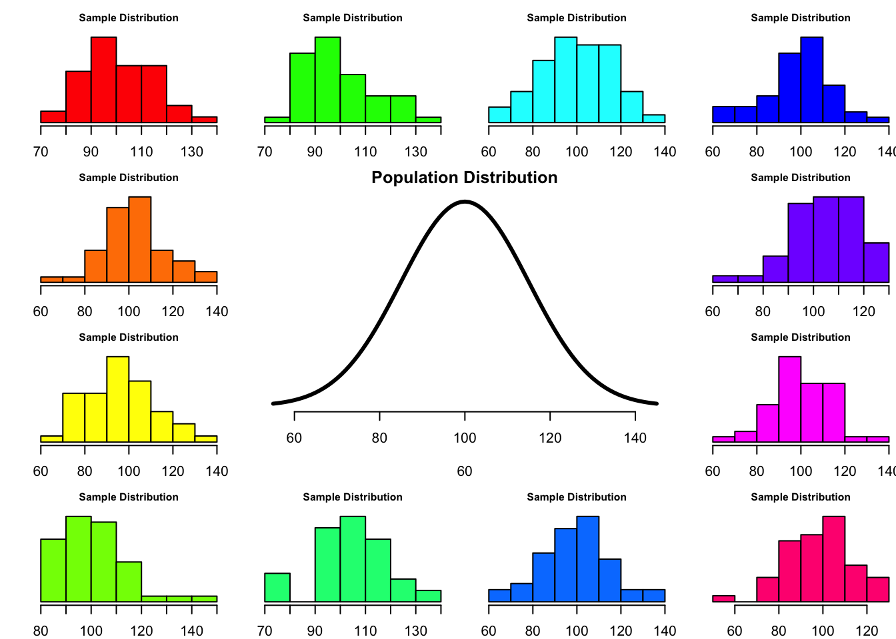

layout(matrix(c(2:6,1,1,7:8,1,1,9:13), 4, 4))
n <- 56 # Sample size
df <- n - 1 # Degrees of freedom
mu <- 100
sigma <- 15
IQ <- seq(mu-45, mu+45, 1)
par(mar=c(4,2,2,0))
plot(IQ, dnorm(IQ, mean = mu, sd = sigma), type='l', col="red", main = "Population Distribution")
n.samples <- 12
for(i in 1:n.samples) {
par(mar=c(2,2,2,0))
hist(rnorm(n, mu, sigma), main="Sample Distribution", cex.axis=.5, col="beige", cex.main = .75)
}